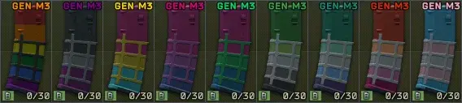

Mod
PrideMags
- Downloads
- 2,038
- Favourites
- 6
- Mod lists
- 8
This mod displayed a profile-binding notice on Forge.
The author marked this item as containing advertising.
Overview
This mod simply adds a couple of magazines to the game that are painted to represent those in the SPT community who are a part of the LGBTQIA+ community.
Installation
- Download Eukyre-PrideMags.7z
- Open the downloaded .7z file in 7-zip.
- Drag the contents of the .7z file into your base SPT directory.

Showcase

Version
2.0.0
SPT ~4.0.13
Fika: compatible
468 downloads9.7 MB
Happy Pride!
v2.0.0 brings a full overhaul to the existing textures alongside some new additions: bringing the total mags up to 9!
Dependencies
VirusTotal: report 1
Version
1.0.1
SPT ~3.11.0
Fika: unknown
1,425 downloadsUnknown size
CHANGELOG:
- Fixed a trader assort issue that was preventing Peacekeeper’s assort from loading.
- Added bisexual and asexual mags.
![452998493-64633487-d6f9-4d0b-b18c-35df50e7fbea.png?jwt=eyJhbGciOiJIUzI1NiIsInR5cCI6IkpXVCJ9.eyJpc3MiOiJnaXRodWIuY29tIiwiYXVkIjoicmF3LmdpdGh1YnVzZXJjb250ZW50LmNvbSIsImtleSI6ImtleTUiLCJleHAiOjE3NDk0NzEyODksIm5iZiI6MTc0OTQ3MDk4OSwicGF0aCI6Ii8xMzA4OTA2NzUvNDUyOTk4NDkzLTY0NjMzNDg3LWQ2ZjktNGQwYi1iMThjLTM1ZGY1MGU3ZmJlYS5wbmc_WC1BbXotQWxnb3JpdGhtPUFXUzQtSE1BQy1TSEEyNTYmWC1BbXotQ3JlZGVudGlhbD1BS0lBVkNPRFlMU0E1M1BRSzRaQSUyRjIwMjUwNjA5JTJGdXMtZWFzdC0xJTJGczMlMkZhd3M0X3JlcXVlc3QmWC1BbXotRGF0ZT0yMDI1MDYwOVQxMjA5NDlaJlgtQW16LUV4cGlyZXM9MzAwJlgtQW16LVNpZ25hdHVyZT1kMzUwOGQwNzk0YjY3ZmMxNmUwZWVlYTgwYmQ5NTNkYzc0NTNiZmM1NDQzODMzNmU5YWY3MGVjMWE4ZTA0MTcwJlgtQW16LVNpZ25lZEhlYWRlcnM9aG9zdCJ9.QOUx__UtvO5dlWl6E4tuYdgRMCYEcl2QlLaf_1Kivpg](../../../static/image-unavailable.svg)
VirusTotal: report 1
nuked from forge, try source code url